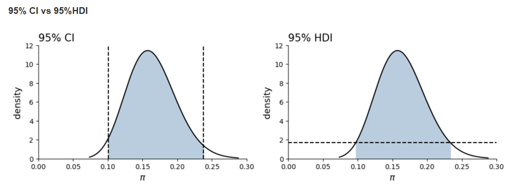
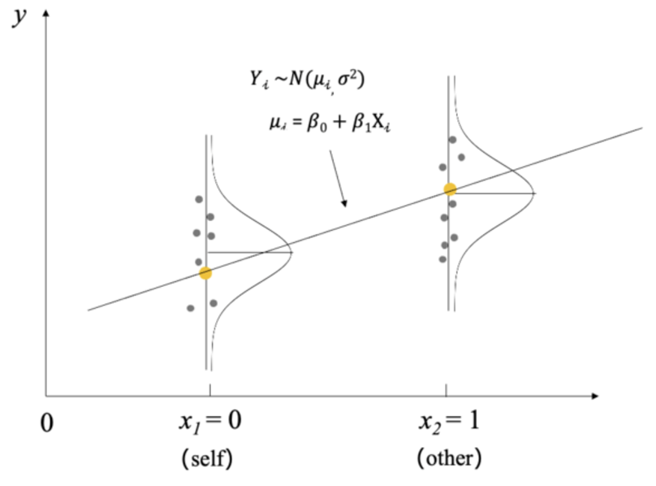
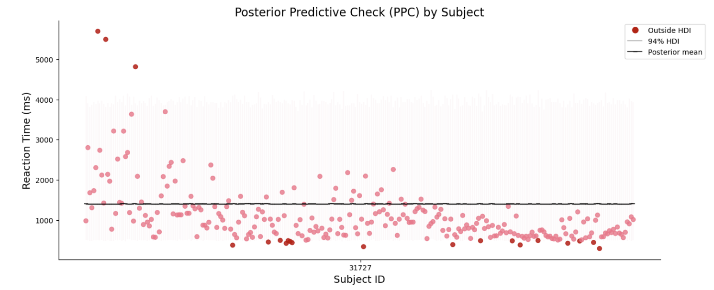

部分池化(Partial pooling)#
完全池化模型仅考虑了trial之间的差异，没有考虑被试之间的差异。
非池化模型考虑了被试的差异，但是容易受到不同被试内部极端数据的影响，忽视了不同被试做同一任务时可能存在的关系。
部分池化 (Partial pooling)是构建分层模型的关键
它假设，不同被试 (layer2) 来自于一个关于被试的总体 (Population)，被试形式的分布提供了对于组间变异(between variability)的解释。
不同trial的反应时 (layer1) 又来自于不同被试 (layer2) ，每个被试内部的trial数形成的分布提供了对于组内变异(within variability)的解释。

\(Layer1 —— 数据层\)
首先，第一层是反应时数据，\(Y_{ij}\)中的j是指第j个被试，i是指第j个被试的第i个数据点。我们假定每个被试的i个数据点都服从该被试自己的一个特定的正态分布，并且假定被试之间只是在均值上有差异，而方差相同，即每个被试的\(\sigma_y^2\)相同
\(Layer2 —— 被试层\)
数据层中每个被试的\(\mu_j\)也要服从一个更大的群体层面的正态分布 \(N(\mu,\sigma_\mu^2)\)。然而，这个正态分布并非直接对应数据，而是对应参数，即参数分布的参数，在层级模型里我们称之为“超参”，这里的超参则是\(\mu,\sigma_\mu^2\)。
\(Layer3 —— 群体层\)
\(\mu,\sigma_\mu,\sigma_y\)（总共有3个未知的参数）
\(\mu\)表示总体的反应时均值
\(\sigma_\mu\)表示组与组之间在Y均值上的变异性
\(\sigma_y\)表示每个组内部Y的变异性（我们假设每个组内部的变异性相同）
另一种定义方式
我们也可以这样来理解层级模型：
\(\mu_i\)表示：第j个被试的反应时均值
\(\sigma_\mu\)表示：第j个被试的反应时标准差
那么，\(\mu_j与\mu\)的关系式可以写为：
个体均值相对于总体均值存在一个偏倚量或者偏差：\(b_j\)
同时，\(b_j\)满足：
那么层级模型的Layer1和Layer2可以写为：
由于正态分布具有可加性，因此这两种定义方法都是可以的。
模型定义及MCMC采样
根据公式定义模型：
Layer1：\(Y_{ij}|\mu_j,\sigma_y \sim N(\mu_j,\sigma_y^2)\)观测数据由群组参数生成
Layer2：\(\mu_j|\mu,\sigma_\mu \overset{ind}{\sim} N(\mu,\sigma_\mu^2)\)生成不同被试的均值
Layer3：\(\mu,\sigma_y,\sigma_\mu\) 超参数
相对于非池化模型，部分池化模型的关键在于定义，被试参数在总体上的变异，即
mu = pm.Normal("mu", mu=hyper_mu, sigma=var_mu, dims="subject")。其次，是相似于非池化模型，trial数的反应时间分布在被试上的变异
pm.Normal("y_est", mu=mu[subject_id], sigma=var_y, observed=log_RTs, dims="obs_id")。
# 建立被试 ID 映射表
subject_mapping = {subj_id: idx for idx, subj_id in enumerate(df_first5["subj_id"].unique())}
# 将被试 ID 转换为索引
mapped_subject_id = df_first5["subj_id"].map(subject_mapping).values
# 定义 pymc 模型坐标
coords = {
"subject": df_first5["subj_id"].unique(),
"obs_id": df_first5.index.values
}
with pm.Model(coords=coords) as partial_pooled_model:
# 对 RT 进行 log 变换
log_RTs = pm.MutableData("log_RTs", np.log(df_first5['RT']))
# Hyperpriors,定义全局参数——我们主要想估计的参数
var_y = pm.Exponential("within_variability", 1)
var_mu = pm.Exponential("between_variability", 1)
hyper_mu = pm.Normal("hyper_mu", mu=7.5, sigma=5)
# 定义被试参数
mu = pm.Normal("mu", mu=hyper_mu, sigma=var_mu, dims="subject")
#获得观测值对应的被试映射
subject_id = pm.MutableData("subject_id", mapped_subject_id, dims="obs_id")
# 定义 likelihood
likelihood = pm.Normal("y_est", mu=mu[subject_id], sigma=var_y, observed=log_RTs, dims="obs_id")
partial_trace = pm.sample(draws=5000, # 使用mcmc方法进行采样，draws为采样次数
tune=1000, # tune为调整采样策略的次数，可以决定这些结果是否要被保留
chains=4, # 链数
discard_tuned_samples= True, # tune的结果将在采样结束后被丢弃
random_seed=84735)
pm.model_to_graphviz(partial_pooled_model)

模型的结构：
每个被试的反应时均值是由两个超参得到的：分别是群体层面的\(\mu\)和被试间的变异性\(\sigma_\mu\)。
另一个参数则是被试内的变异性\(\sigma_y\)
查看后验参数估计
可以发现:
不同被试的反应时间具有一致性，组内变异较小（较小的标准差）。
被试均值存在显著差异，表明被试间的反应时间差异显著。
az.summary(partial_trace)

ax = az.plot_trace(
partial_trace,
var_names=["mu"],
filter_vars="like",
compact=False,
figsize=(7,14))
plt.tight_layout()

后验预测分布
partial_ppc = pm.sample_posterior_predictive(partial_trace,
model=partial_pooled_model)
partial_hdi_sum = ppc_sum(ppc=partial_ppc,
data=df_first5)
同样进行对数转换：
partial_hdi_sum = inv_log_hdi_sum(partial_hdi_sum)
可视化预测结果：
ppc_plot(hdi_sum=partial_hdi_sum)

可以看到相比于非池化模型，在层级模型中不同组的后验预测可信区间的长度、后验预测均值都更为接近。
我们将三种模型放在一起对比：
fig, axes = plt.subplots(3,1, figsize=(7,9))
ax = axes[0]
ax = ppc_plot(hdi_sum=complete_hdi_sum, ax = ax, show_plot=False)
ax.set_title("Complete pooling model")
ax = axes[1]
ax = ppc_plot(hdi_sum=partial_hdi_sum, ax = ax, show_plot=False)
ax.set_title("Patial pooling model")
ax = axes[2]
ax = ppc_plot(hdi_sum=no_hdi_sum, ax = ax, show_plot=False)
ax.set_title("No pooling model")
sns.despine()
plt.tight_layout()
plt.show()

可以明显看出，相比于完全池化模型和非池化模型，部分池化模型事先了一个较好的折中。
Within- vs between-group variability#
在完全池化模型中，变异性的来源只有一种，即个体观测值\(Y\)在总体中的变异 (\(σ\))
在非池化模型中，变异来源分散在不同被试中，即个体观测值在不同被试中的变异 (\(\sigma_j\))
而在部分池化模型中，我们可以把个体观测值\(Y\)的变异来源分解成两个部分：
组内（被试内）变异：\(\sigma_y\)
是指在每个被试内部，不同试次之间的变异性。
组间（被试间）变异：\(\sigma_\mu\)
是指被试与被试之间在均值上的变异性，可以理解为个体差异。

我们可以通过类似于单因素方差分析的方法，计算出总变异性被被试间或被试内变异所解释的比例。
如果组间方差远大于组内方差，那么组间方差可以解释大部分观测值的变异，即个体差异较大。
如果组间方差远小于组内方差，那么组间的区别就不是很明显，即被试之间接近于同质的。
此外，若组间方差远大于组内方差，则可以说明组内的变异性很小，组内分数高度相关：
这意味着我们可以计算跨时间节点、跨条件的个体差异是否稳定，也可以把它变成一个和信度指标相关的计算公式。如果感兴趣，可以查阅一个叫做icc(interclass correlation)的指标。
下图展示了三种组间方差与组内方差的分布情况(横轴为方差的大小，蓝色为组间方差，黑色为组内方差)：

组别越独特，\(\sigma_\mu\)相对越大，每组内的相关性就越大。
图 (a) 中，组间变异是组内变异的4倍，此时组内相关性为 0.8，接近于 1。
图 (c) 中，组间变异是组内变异的1/4倍，组内相关性为 0.2，接近 0。
Shrinkage & the bias-variance trade-off#
从下图和表格中可以发现:
对于目前的被试来说，相比于非池化模型，部分池化模型中的参数更加靠近完全池化模型，这就是分层模型的收缩 (shrinkage) 现象。
# 提取三个模型参数后验，筛选中其中含有mu参数的部分
partial_stats = az.summary(partial_trace, var_names=["mu"], filter_vars = "like", kind="stats")
no_stats = az.summary(no_pooled_trace, var_names=["mu"], filter_vars = "like", kind="stats")
complete_stats = az.summary(complete_trace, var_names=["mu"], filter_vars = "like", kind="stats")
partial_stats = inv_log_hdi_sum(partial_stats)
no_stats = inv_log_hdi_sum(no_stats)
complete_stats = inv_log_hdi_sum(complete_stats)
# 设置一列，表明参数来源
complete_stats['source'] = 'Complete pool'
no_stats['source'] = 'No pool'
partial_stats['source'] = 'Partial pool'
# 合并三个模型的结果
df_compare = pd.concat([complete_stats.reset_index(),
no_stats.reset_index(),
partial_stats.reset_index()])
#设置索引，表明参数来源
df_compare.set_index(['source', df_compare.index], inplace=True)
df_compare

# 设置三个绘制坐标轴
fig, (ax1, ax2, ax3) = plt.subplots(1,3, figsize=(12,4), sharex=True)
# 绘制三个模型参数后验
az.plot_forest(partial_trace, var_names=["mu"], filter_vars = "like", combined=True, ax=ax1)
ax1.set_title("Patial Pooling")
az.plot_forest(no_pooled_trace, var_names=["mu"], filter_vars = "like", combined=True, ax=ax2)
ax2.set_title("No Pooling")
az.plot_forest(complete_trace, var_names=["mu"], filter_vars = "like", combined=True, ax=ax3)
ax3.set_title("Complete Pooling")
plt.tight_layout()
plt.show()

在完全池化模型中，对于每一个被试来说，后验估计均值都是相同的，在弱先验的情况下，后验估计均值约等于所有观测值的平均值。
在非池化模型中，对于每一个被试来说，其后验估计均值的估计只来自该组内部，在弱先验的情况下，后验估计均值约等于该组内所有观测值的平均值。
在层级模型中，后验估计均值则是在完全池化和非池化模型中找到一个平衡，组间(group-specific)参数有可能更倾向完全池化模型，也有可能更倾向于非池化模型，这种现象被称为shrinkage
我们可以发现，在部分池化模型中，每个被试的数据向总体均值的方向拉取，会向内发生收缩，所以叫做“shrinkage”。
当使用弱信息先验时，分层模型的后验平均预测结果（大致）是完全池化模型和非池化模型预测结果的加权平均
我们可以分别绘制出每个观测值对应的后验预测均值，并观察这些后验预测均值在不同的模型之间发生了什么变化:
#设置画布大小1
plt.figure(figsize=(9,4))
#绘制完全池化模型下每个点对应的后验预测均值
plt.scatter(complete_hdi_sum["obs_id"],
complete_hdi_sum["mean"],
alpha=0.15,
s=80,
label="Complete pooling")
#绘制非池化模型下每个点对应的后验预测均值
plt.scatter(no_hdi_sum["obs_id"],
no_hdi_sum["mean"],
alpha=0.15,
s=80,
label="No pooling")
#绘制部分池化模型下每个点对应的后验预测均值
plt.scatter(partial_hdi_sum["obs_id"],
partial_hdi_sum["mean"],
alpha=0.15,
s=80,
label="Partial pooling")
#设置图例
plt.legend()
#计算每个被试的数据量，并根据数据量大小在x轴上进行刻度标识
count_per_subject = df_first5.groupby("subject").size().values
cumulative_count = count_per_subject.cumsum()
xtick = cumulative_count - count_per_subject / 2
plt.xticks(xtick,df_first5["subject"].unique())
#设置标题
plt.title("Posterior mean of observed data",
fontsize=15)
sns.despine()

收缩的大小 (即完全池化模型均值和非池化模型均值的权重)，取决于被试的数量\(n_j\)以及组内和组间变异性的比值。
当被试的数量减少后，收缩率会增加。即我们越来越依赖全局的趋势来了解一个组别较少的结果。
当组内变异性\(\sigma_y\)和组间变异性\(\sigma_\mu\)比值较大时，收缩率也会增加。即当被试之间的差异很小时，我们会更依赖于用全局的趋势来理解其中一个被试的数据。
层次模型在完全池化和无池化之间取得了平衡，优势在于：
1.将对不同群体(被试)的观察结果推广到更广泛的总体中
2.在了解任何单个群体时，借用所有其他群体的信息
这也导致了它的缺点：
如果被试数量少，并且组内变异大，那么我们对于总体和不同组别(被试)的估计都可能存在偏差。
完全池化 |
非池化 |
部分池化 |
|
|---|---|---|---|
特点 |
仅考虑总体的变异，模型过于简单 |
仅考虑各组别的差异，结果难以推广到总体 |
同时考虑组间和组内变异 |
偏差-方差权衡 |
有较高的偏差和较低的方差 |
较低的偏差和较高的方差 |
更为平衡 |
模型评估
接下来，我们通过MAE指标对三个不同的模型进行评估，以比较它们的表现：
def calculate_mae(hdi_sum, obs = "y", pred = "mean"):
"""
计算后验预测均值和 MAE (Median Absolute Error)。
"""
# 提取后验预测值
observed_data = hdi_sum[obs]
posterior_predictive = hdi_sum[pred]
# 计算 MAE（绝对误差的中位数）
mae = np.median(np.abs(observed_data - posterior_predictive))
return mae
pd.DataFrame({
"Complate Pooling Model": [calculate_mae(complete_hdi_sum)],
"No Pooling Model": [calculate_mae(no_hdi_sum)],
"Partilar Pooling Model": [calculate_mae(partial_hdi_sum)],
})
Complate Pooling Model |
No Pooling Model |
Partilar Pooling Model |
|
|---|---|---|---|
0 |
769.935022 |
402.799413 |
376.013831 |
预测新组的数据
我们可以根据当前的层级模型对新组别的数据进行预测，如被试31727
在pymc中，只要在
pm.sample_posterior_predictive中传入层级模型的后验参数采样结果，即可以在层级模型的基础上对新数据生成预测预测结果储存在
.predictions中
# 选择被试为"31727"的数据
new_data = df_raw[(df_raw.subject == 31727) & (df_raw['percentCoherence'] == 5)]
# 建立索引 'subj_id' 和 'obs_id'
new_data['subj_id'] = new_data['subject']
new_data['obs_id'] = new_data.groupby('subject').cumcount() + 1
new_data.head()

进行预测时，我们将使用新数据 new_data；以及先前模型计算出的参数，即：
# 建立被试 ID 映射表
subject_mapping = {subj_id: idx for idx, subj_id in enumerate(new_data["subj_id"].unique())}
# 将被试 ID 转换为索引
mapped_subject_id = new_data["subj_id"].map(subject_mapping).values
# 定义 pymc 模型坐标
new_coords = {
"subject": new_data["subj_id"].unique(),
"obs_id": new_data.index.values
}
with pm.Model(coords=new_coords) as partial_pooled_pred:
# 对 RT 进行 log 变换
log_RTs = pm.MutableData("log_RTs", np.log(new_data['RT']))
# 定义新预测数据对应的新参数
hyper_mu = pm.Normal("new_hyper_mu", mu=7.105, sigma=0.340)
var_y = pm.Exponential("new_within_variability", 5)
var_mu = pm.Exponential("new_between_variability", 5)
# 定义被试参数
new_mu = pm.Normal("new_mu", mu=hyper_mu, sigma=var_mu, dims="subject")
#获得观测值对应的被试映射
subject_id = pm.MutableData("subject_id", mapped_subject_id, dims="obs_id")
# 定义 likelihood
likelihood = pm.Normal("y_est", mu=new_mu[subject_id], sigma=var_y, observed=log_RTs, dims="obs_id")
# 进行后验预测估计，注意使用的是上一个模型的后验参数估计，partial_trace
pred_trace = pm.sample_posterior_predictive(partial_trace,
var_names=["y_est"],
predictions=True,
random_seed=84735)
对预测数据进行转换并进行可视化：
pred_hdi_sum = ppc_sum(ppc=pred_trace.predictions,data=new_data)
pred_hdi_sum = inv_log_hdi_sum(pred_hdi_sum)
ppc_plot(pred_hdi_sum)
